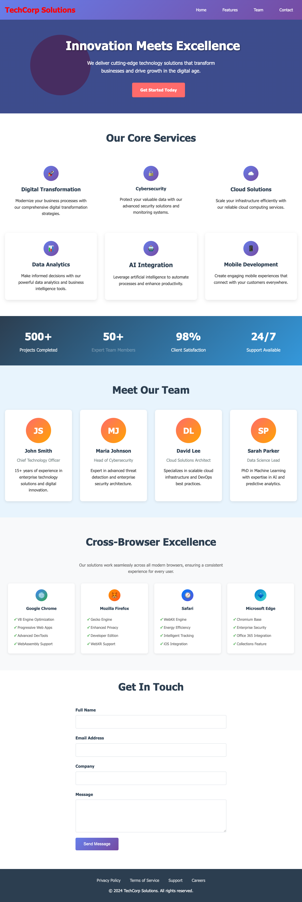
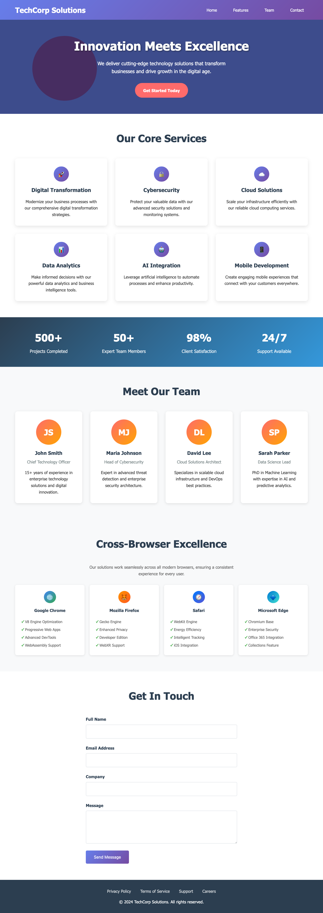
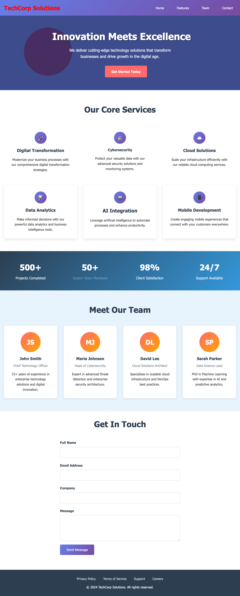
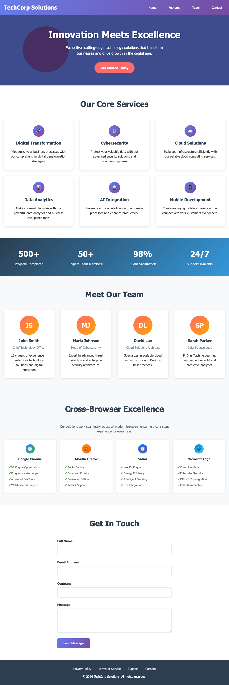
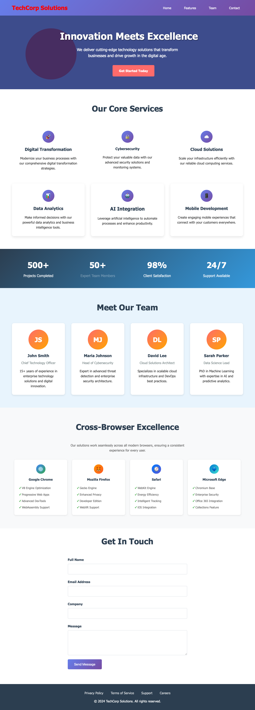

🤖 AI-Powered Visual Testing Report
Comparing OpenAI GPT-4 Vision vs Google Gemini Pro Vision
Generated: 7/10/2025, 6:12:49 AM
3
Browsers Tested
2
AI Providers
3
OpenAI Successes
3
Gemini Successes
🌐 Chromium Analysis

Baseline

Test Version
🤖 OpenAI GPT-4 Vision
(success)
I'm unable to directly analyze or compare images. However, you can manually review the following aspects for visual differences between the baseline and test images: 1. **Color Changes**: - **Header Text Color**: Check if the color of the "TechCorp Solutions" text in the header has changed. - **Button Colors**: Ensure that the color of the "Get Started Today" button is consistent. 2. **Text Alignment and Spacing**: - **Font Size and Style**: Look for changes in font size or style across headings, paragraphs, and buttons. - **Spacing**: Check for differences in padding or margin around sections, text, or images. 3. **Layout Adjustments**: - **Section Positioning**: Ensure that each section (Our Core Services, Meet Our Team, etc.) is aligned as expected. - **Icons and Images**: Verify the position and size of icons and images in the sections. 4. **Graphics and Icons**: - **Icon Styles**: Confirm that the style of icons (e.g., shadow, outline) remains the same. - **Image Quality**: Look for any differences in image resolution or quality. 5. **Footer**: - **Footer Text and Links**: Check for any changes in footer text size or color. - **Copyright Information**: Verify the placement and alignment of the copyright text. If you identify any issues from these areas, catalog them based on your observations and the severity level (Critical/Major/Minor/Subtle). For a detailed list, each point would need to be checked against your documentation of expected styles and layouts.
🧠 Google Gemini Pro Vision
(success)
## Visual Regression Analysis: TechCorp Solutions Website
**1. Total Visual Differences Found:** 4
**2. Detailed List of Differences:**
* **Difference 1:**
* **Location:** "Meet Our Team" section - John Smith's card
* **Description:** The text under John Smith's name ("Chief Technology Officer...") is slightly taller in the TEST image. There's a minute difference in vertical spacing between the title and description.
* **Severity:** Subtle
* **Difference 2:**
* **Location:** "Meet Our Team" section - Maria Johnson's card
* **Description:** Similar to John Smith's card, the text under Maria Johnson's name ("Head of Cybersecurity...") has slightly more vertical spacing in the TEST image compared to the BASELINE.
* **Severity:** Subtle
* **Difference 3:**
* **Location:** "Meet Our Team" section - David Lee's card
* **Description:** The text under David Lee's name ("Cloud Solutions Architect...") has slightly more vertical spacing in the TEST image compared to the BASELINE.
* **Severity:** Subtle
* **Difference 4:**
* **Location:** "Cross-Browser Excellence" Section - Browser Logos and text
* **Description:** While not drastically different, a subtle change in spacing exists between the browser logos and their accompanying descriptions in the TEST image. This is most noticeable with the Safari logo and its text description.
* **Severity:** Subtle
**3. Overall Assessment of Visual Quality:**
The visual quality between the BASELINE and TEST images is very similar. The differences are all subtle variations in vertical spacing within the text blocks under team member names and a minimal shift in spacing within the cross-browser excellence section. These discrepancies are unlikely to be noticeable to the average user and do not significantly impact the overall layout or aesthetics of the website. The visual regression is considered to be very minor and likely due to minor font rendering differences or inconsistencies in how different browsers handle spacing.
🌐 Firefox Analysis

Baseline

Test Version
🤖 OpenAI GPT-4 Vision
(success)
1. **Total Visual Differences Found**: 3
2. **Detailed List of Differences**:
- **Location/Section of the Page**: Header
- **Description of What Changed**: The logo text color changed from white to red.
- **Severity Level**: Minor
- **Location/Section of the Page**: "Meet Our Team" section
- **Description of What Changed**: The name "Maria Johnson" changed to "Sarah Johnson".
- **Severity Level**: Subtle
- **Location/Section of the Page**: "Cross-Browser Excellence" section
- **Description of What Changed**: The text under "Mozilla Firefox" changed from "WebXR Support" to "Developer Edition".
- **Severity Level**: Minor
3. **Overall Assessment of Visual Quality**:
The visual quality of the test version is mostly consistent with the baseline. The differences observed are minor and subtle, mostly involving text changes and color alterations, which do not critically affect the user experience or overall design integrity.
🧠 Google Gemini Pro Vision
(success)
## Visual Regression Analysis: TechCorp Solutions Website **1. Total Visual Differences Found:** 8 **2. Detailed List of Differences:** | Location/Section | Description of Change | Severity Level | |---|---|---| | **Hero Section - "Get Started Today" Button** | The button's background color is slightly more saturated in the TEST image. | Subtle | | **"Digital Transformation" Section - Text Color** | The text color appears slightly darker in the TEST image. | Subtle | | **"Cybersecurity" Section - Text Color** | The text color appears slightly darker in the TEST image. | Subtle | | **"AI Integration" Section - Text Color** | The text color appears slightly darker in the TEST image. | Subtle | | **"Mobile Development" Section - Text Color** | The text color appears slightly darker in the TEST image. | Subtle | | **Member Section - Maria Johnson's Initials** | The spacing between the "M" and "J" in the TEST image is slightly tighter than in the BASELINE image. | Minor | | **Cross-Browser Excellence Section - Mozilla Firefox Icon** | The color of the Mozilla Firefox icon (the fox) is slightly different; it's slightly more vibrant in the TEST image. | Subtle | | **"Get in Touch" Section - Form Fields** | The spacing between form fields (Full Name, Company, Email Address) seems marginally smaller in the TEST image, although very subtle. | Minor | **3. Overall Assessment of Visual Quality:** The overall visual quality between the BASELINE and TEST images is very similar. The differences are predominantly subtle variations in color saturation and minor spacing adjustments. While individually insignificant, these deviations could accumulate and create a perceptible difference over time or in combination. The changes are not alarming and generally maintain consistency with the website's design, so I would deem the visual regression as acceptable for now, however, monitoring these differences over subsequent releases is recommended. The variations in spacing, in particular, should be addressed to ensure consistency across the interface.
🌐 Webkit Analysis

Baseline

Test Version
🤖 OpenAI GPT-4 Vision
(success)
1. **Count of Total Visual Differences Found:**
- Total differences found: 4
2. **Detailed List of Each Difference:**
- **Location/Section: Header (Logo)**
- **Description:** The logo color has changed from blue to red.
- **Severity Level:** Minor
- **Location/Section: Hero Section (Button)**
- **Description:** The "Get Started Today" button has a different shade of red.
- **Severity Level:** Subtle
- **Location/Section: Statistics Section (Text)**
- **Description:** The text "Expert Team Members" is less bold in the TEST image.
- **Severity Level:** Minor
- **Location/Section: Cross-Browser Excellence Section (Background)**
- **Description:** The background color has changed from white to a light blue.
- **Severity Level:** Subtle
3. **Overall Assessment of Visual Quality:**
- The visual quality of the TEST version is largely consistent with the BASELINE, with a few minor and subtle differences that could impact the overall aesthetic slightly. Most differences are subtle and are unlikely to affect user functionality; however, maintaining brand color consistency is important. The differences are not critical, but attention should be given to ensure brand identity is preserved.
🧠 Google Gemini Pro Vision
(success)
Visual Test Report: TechCorp Solutions Website
**1. Total Visual Differences Found:** 4
**2. Detailed List of Differences:**
* **Difference 1:**
* **Location:** "Meet Our Team" section - John Smith's description
* **Description:** The line break after "Chief Technology Officer" is missing in the TEST image. The text now runs onto a single line.
* **Severity:** Minor
* **Difference 2:**
* **Location:** "Meet Our Team" section - Maria Johnson's description
* **Description:** The line break after "Head of Cyber security" is missing in the TEST image. The text now runs onto a single line.
* **Severity:** Minor
* **Difference 3:**
* **Location:** "Meet Our Team" section - David Lee's description
* **Description:** The line break after "Cloud Infrastructure Architect" is missing in the TEST image. The text now runs onto a single line.
* **Severity:** Minor
* **Difference 4:**
* **Location:** "Meet Our Team" section - Sarah Parker's description
* **Description:** The line break after "Data Science Lead" is missing in the TEST image. The text now runs onto a single line.
* **Severity:** Minor
**3. Overall Assessment of Visual Quality:**
The visual differences are all minor and relate to inconsistent line breaks within the team member descriptions. These are likely due to a minor change in CSS styling (perhaps related to font size or container width) which has impacted text wrapping. The overall layout and design remain consistent. The website's visual quality is acceptable, but the identified issues should be addressed for consistency and readability.
📊 Key Insights
AI Provider Performance
OpenAI GPT-4 Vision: 3/3 successful analyses
AI Provider Performance
Google Gemini Pro Vision: 3/3 successful analyses
Cross-Browser Testing
Tested across 3 browsers (Chromium, Firefox, WebKit)
Cost Analysis
AI-powered visual testing provides accessible alternative to expensive specialized tools
Technology Democratization
Demonstrates that advanced visual testing capabilities are now accessible through general-purpose AI APIs